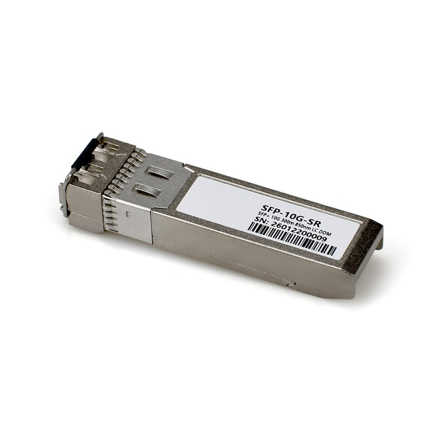
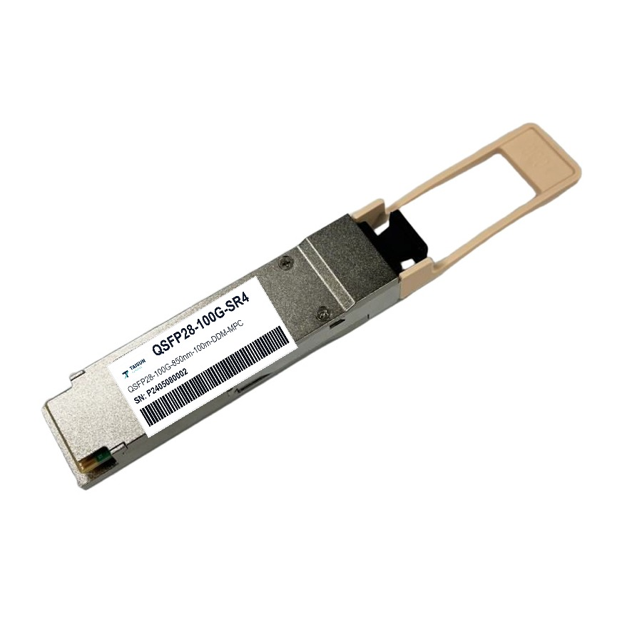
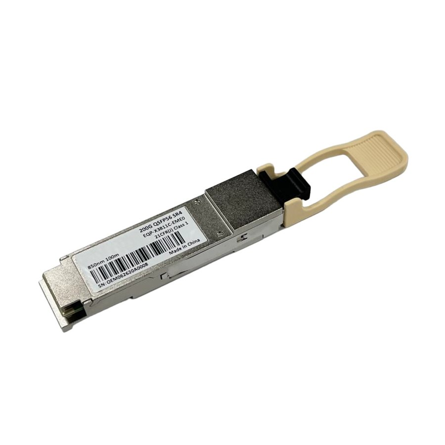
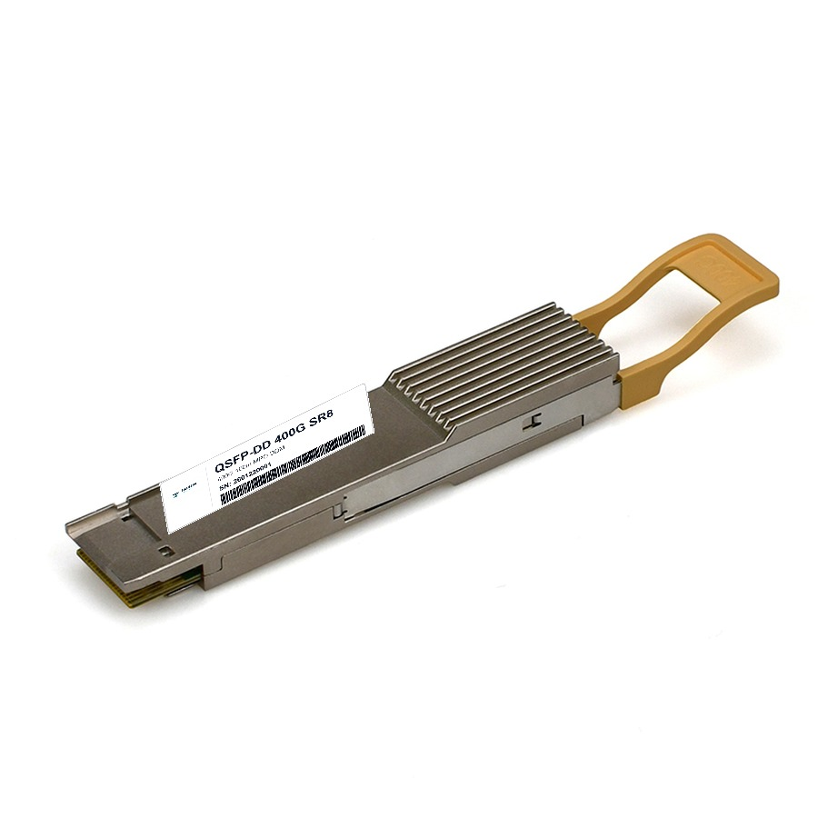
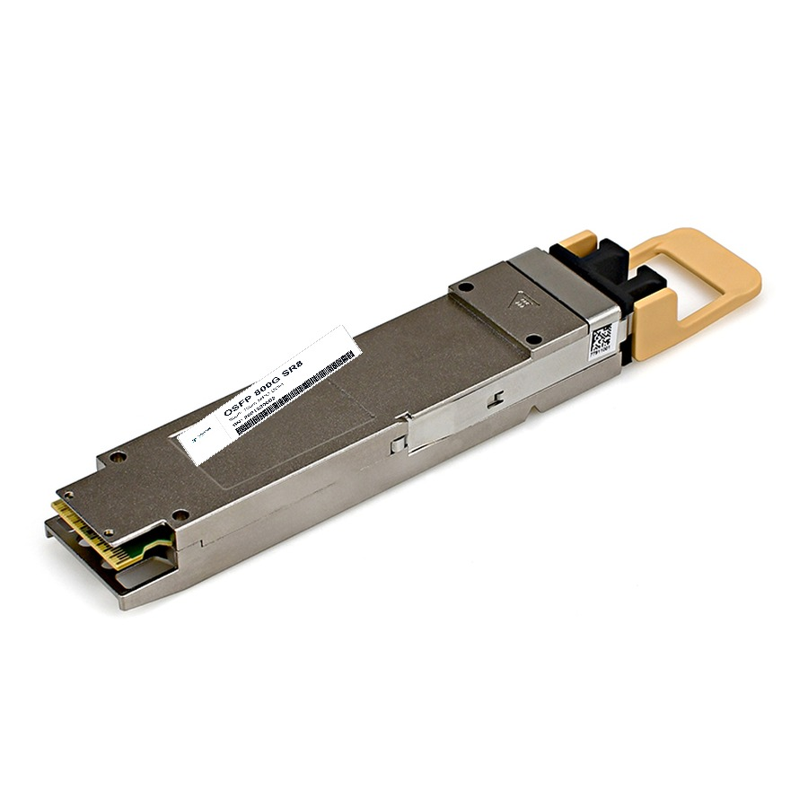
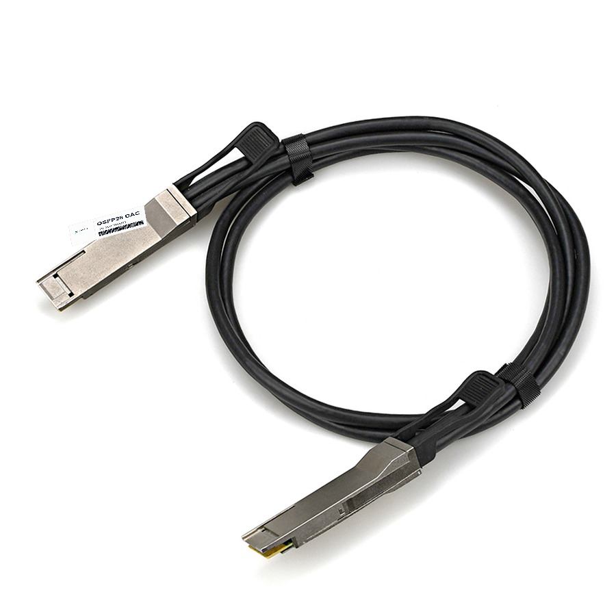

10G · 25G
SFP+ / SFP28
SR, LR, BiDi and long-reach variants for access, aggregation and enterprise links.
850 nm VCSEL · 1310 nm DFB · Duplex LC
View models →From 10G SFP+ to 800G OSFP — we manufacture transceivers and AOC/DAC cables with published specifications, batch-level test reports and your own label. No trading layer between you and the module.
Every line is built to MSA / IEEE specifications and shipped with a test report. Choose a family to see exact reach, wavelength, connector and operating range.

SR, LR, BiDi and long-reach variants for access, aggregation and enterprise links.

SR4, LR4, CWDM4, ER4, DR1 and FR1 for data centers and carrier transport.

100G-per-lane PAM4 modules for high-density data center fabric.

SR4, SR8, DR4, FR4, LR4 and ER8 for AI / cloud infrastructure.

SR8, DR8 and LPO variants for next-generation 800G switching platforms.

Passive copper DAC and active optical cables in 25G, 100G and 400G.
We are a Shenzhen optical module factory, not a catalog reseller. Parameters, labeling and test data stay consistent from sample to volume.
Send the switch platform, reach and fiber type. We quote the exact module variant — not a "similar" part.
Same BOM, same firmware and same test limits across repeat orders. Re-orders behave like the qualified sample.
TX power, RX sensitivity, DOM and link verification data delivered with the goods, ready for your QA file.
Your brand, part number, label layout and packaging. Sample and pilot quantities welcome before volume.
A repeatable process built for buyers who need documentation as much as hardware.
Speed, form factor, reach, fiber and switch compatibility are locked in writing before production.
Modules assembled and calibrated to the published parameters for that model and revision.
Optical and electrical verification, DOM check and a lot-level report before packing.
Your labeling and packaging, export documents and worldwide delivery from Shenzhen.
A quick look at the parameters we publish. The full catalog has 30+ configurations with complete specifications.
| Model | Form factor | Reach | Wavelength | Connector | Case temp. |
|---|---|---|---|---|---|
| TS-SFP-10G-SR | SFP+ | 300 m OM3 | 850 nm | Duplex LC | 0–70 °C |
| TS-SFP-25G-LR | SFP28 | 10 km SMF | 1310 nm DFB | Duplex LC | 0–70 °C |
| TS-Q28-100G-CWDM4 | QSFP28 | 10 km SMF | 1270–1330 nm | Duplex LC | 0–60 °C |
| TS-Q56-200G-SR4 | QSFP56 | 100 m OM4 | 850 nm ×4 | MPO-12 APC | 0–70 °C |
| TS-QDD-400G-DR4 | QSFP-DD | 500 m SMF | 1311 nm ×4 | MPO-12 APC | 0–70 °C |
| TS-OSFP-800G-DR8 | OSFP | 500 m SMF | 1310 nm ×8 | 2 × MPO-12 APC | 0–70 °C |
Send the model or link parameters — speed, form factor, reach and quantity. We will confirm the exact build, unit price and test report format.